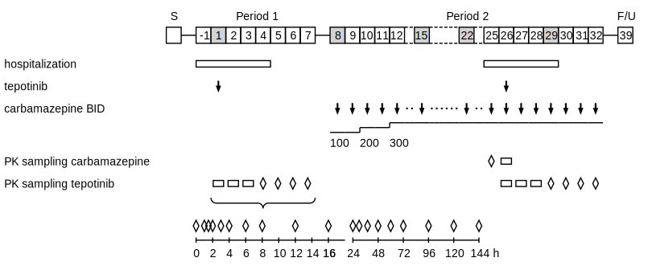

Trial design visualization

TD is a command line tool written in python to create overview figures for clinical study designs, and to summarize relevant elements of the schedule of assessments.
The input describing the study design is expected as a json-formatted text file.
The output is provided in vector graphic form (as a .svg file) that can be easily included in Office documents or websites.
Getting started
-
Go to Use for guidance how to install and run the tool.
-
The Input page describes the structure and syntax of the input required to generate
Code documentation
- A detailed documentation of the python code is provided in the Code documentation section.